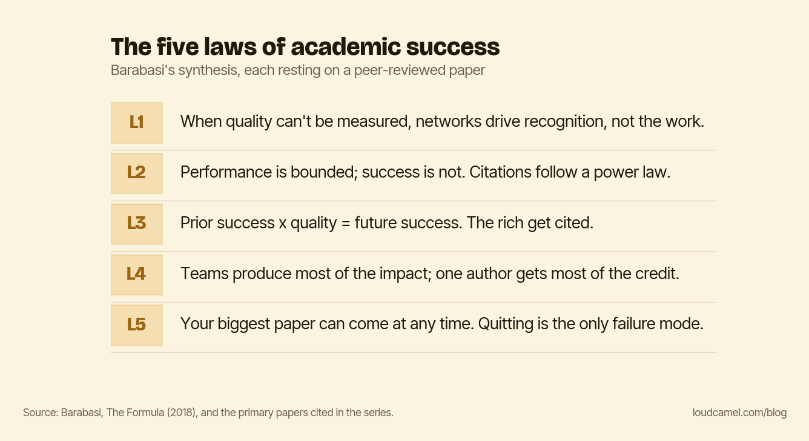

How academic careers actually work
You spent two years on a paper. Three years later it has four citations. A less rigorous paper in your field, same journal, same topic, has a hundred and twenty. You read it. It’s fine. It’s not that much better than yours.
The author just happens to be in a famous department, happens to give a talk every six weeks, happens to have a following online. Their paper compounds. Yours sits.
Here is the thing nobody tells you in graduate school: from your first submitted paper onward, half of the job is making sure the right people know your work exists. Not once you have your own research program. Now. Every postdoc offer, faculty short-list, tenure vote, and grant ranking is decided in part by people whose prior familiarity with your work, however slight, tilts the outcome. You were not trained for that half. Almost nobody is.

“Good work speaks for itself”
You might think: I’ll do the job and let the results speak. Or my supervisor will promote me. Sometimes that happens. Often it doesn’t. Your supervisor is busy promoting their own next grant.
A Soviet-era proverb (Ilf and Petrov, The Twelve Chairs) reads: the rescue of the drowning is the responsibility of the drowning themselves. An older version is attributed to Hillel: if I am not for myself, who is for me? Nobody is going to do this for you, especially not in academia.
The romantic belief is half-right. Good work is necessary. It is not sufficient.
Why this is a feature, not a bug
This is not a moral problem. It is an intrinsic feature of any human system where individual quality is hard to measure objectively.
Robert Merton named the Matthew effect in 1968 (Merton, “The Matthew Effect in Science,” Science, 1968): credit accrues to those who already have it. Albert-László Barabási spent the 2010s turning the dynamics into equations (Barabási, The Formula, 2018). The verdict in one sentence: in any field where performance is hard to measure, success is driven by what people already think about you, not by the work itself.
Academia is exactly such a field.
Years before Loud Camel, I worked on a project at RSA, the security division of DELL. A second team ran a parallel project. Both were good. The company had budget for exactly one. In the last three weeks before the decision, my team stopped improving our models and put the time into an interactive presentation. The competing team kept improving theirs.
We won the budget.
Part of me felt that wasn’t fair. Another part noticed we had done nothing dishonest. Both models were good. The decision-maker could see and follow our work, and could not see and follow the other team’s. That is what the budget paid for. Human attention markets work this way in companies, on grant panels, at conferences.
The three usual responses
Most researchers respond in one of three ways.
Denial: “if I just do better work it will be recognized.” Half-right, as above. Good work is the price of entry, not the prize.
Despair: “the system is rigged, why bother.” Wrong. The same studies that map the Matthew effect show the system is responsive. Small, repeated visibility actions compound over years.
Burnout: “I’ll just post more on X, YouTube, Medium.” Exhausting, and off-brand for most. You didn’t get a PhD to become a content creator. A few make platform-native self-promotion work. Stephen Wolfram live-streams hours of actual science on Twitch, and it works because he isn’t translating his work for the platform. The platform is broadcasting his work. For most of us that route is a burnout trap.
The fourth frame
Strategic, low-frequency, low-effort, science-backed visibility.
Care that the work is good (you already do) and that the right people encounter it at the right time (you don’t, and nobody trained you to).
Nobody cares about your work. You should care the most.
That is not a complaint. It is a permission slip. Stop waiting for the field to notice. It won’t, not because the field is hostile but because the field is busy.
The five laws
Barabási’s synthesis rests on five laws, each on a peer-reviewed paper. The five laws below are what this series walks through.
L1. When performance can be measured (sports), performance drives success. When it can’t (science, art), networks drive recognition.
L2. Performance is bounded; success is not. Citations follow a power law.
L3. Prior success times the inherent quality of your work equals future success. The rich get cited.
L4. Teams produce most of the impact; one author gets most of the credit.
L5. Your single biggest paper is statistically independent of where in your career it occurs. Quitting is the only failure mode.
This series walks each law, then turns each into tactics you can act on. You can follow the whole thing from the series index. Two of the laws already have their own deep dives here: the music-market experiment behind L1 in Same song, different universe, and the Matthew effect of L3 in the Daniel effect. Start with L5 if you need a reason to keep going: as long as you don’t quit, your best work is still ahead of you.
This post is part of the Loud Camel field guide to academic visibility. You can read the whole guide as a single PDF: the handbook.